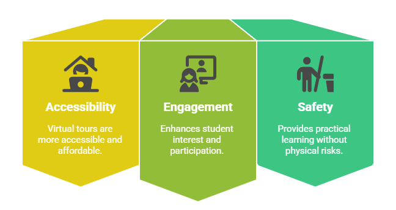

Wind energy is growing rapidly as a renewable energy option, but understanding the physics behind it poses a challenge for higher education universities and their educators. While there's nothing quite like a field trip to a wind farm for getting up close and personal with this renewable power source, logistical problems, costs, and even safety can make such trips a bit impractical.
Experience the virtual wind farm tour, a pioneering method of imparting wind energy education to students right in the classroom - no travel required.
The innovations in virtual reality have allowed students to examine wind farms, look over wind turbines, and even put wind energy to the test - all from a virtual spot near a wind energy operation that might be in a different part of the country. The use of such a platform for education might seem out of reach for most, yet it is an accessible and feasible alternate reality in which to study.
This article looks at how virtual wind turbine tours are transforming education and becoming an essential tool for universities and academicians.
What is a Virtual Wind Farm Tour?
A Wind Virtual Farm Tour is an interactive, computer-simulated experience that allows users to explore a wind farm inside a 3D digital environment. It is not just a tour; it offers, as the creators intend, a full-fledged virtual field trip. Using VR headsets or computer-based platforms, students and researchers can navigate a simulated wind farm, examine wind turbines, and learn how wind energy is harnessed.
How Does It Work?
• Students wear a VR headset or access a simulation on a computer.
• The system presents a 360-degree view of a wind farm.
• Users can "walk" through the wind farm, inspect turbines, and analyze wind power data.
• Advanced versions include interactive tasks like operating a wind turbine simulation or adjusting turbine settings.
Why is VR a Game-Changer for Wind Energy Education?
• Eliminates travel restrictions and high field trip costs.
• Provides hands-on learning experiences without safety risks.
• Makes complex engineering concepts easier to grasp.
By leveraging virtual wind farm training simulators, universities can make wind energy education more effective and accessible.
Why Universities and Educators Should Consider Virtual Wind Farm Tours

1. Accessibility & Cost-Effectiveness
A wind energy virtual tour allows students to experience wind farms from anywhere. No longer do ecucators have to overcome the logistical obstacles of planning an actual school trip—such as arranging transportation, obtaining permits, and ensuring safety compliance—that could make going to a real wind farm cost-prohibitive and a very labor-intensive endeavor. Instead, they can just as easily and safely, with a lot less hassle, go to a virtual wind farm.
2. Better Student Engagement
A conventional in-person lecture on wind energy could find student attention waning. In contrast, a virtual reality wind turbine experience captivates students and draws them into the learning process, creating a lesson that is not only interactive but also immersive.
3. Hands-On Learning Without Safety Risks
Actual wind farms present dangers such as high-voltage equipment and towering turbines. A windmill educational tour in virtual reality removes these risks while still offering an up-close-and-personal look at real wind energy operations.
Universities can provide a safe environment in which to practice the real-world applications of wind energy by using training simulators for wind farms.
Key Features of a Virtual Wind Farm Tour
An immersive educational experience awaits students on a virtual reality renewable energy tour. It's not just about viewing wind turbines from a different angle; it's about understanding the wind tunnel dynamics that make the turbines work. The tour doesn't cut corners, either. Unlike many translated forms of virtual reality, which can feel flat and two-dimensional, this experience demands the participation of all senses.
360-Degree Exploration of Wind Turbines
• Students can move around and explore turbines from every angle.
• Some platforms allow interaction with turbine components.
Universities can prepare students for actual wind energy applications by incorporating virtual wind energy tours.
How Virtual Wind Farm Tours Enhance Wind Energy Education
Teachers frequently find it difficult to make appealing the technically demanding topics in education, such as renewable energy. A virtual reality wind power tour takes this challenge head-on, providing not only a genuine feel for wind power but also a good sense of the kind of working environment a wind turbine technician can expect.
Making Complex Concepts Easier
Challenging many students, the physics of wind energy can be difficult to grasp. Yet, a VR tour of a wind turbine allows the airflow, turbine mechanics, and real-time power conversion to be visualized in an understandable manner.
Bridging Theory and Application
It is one thing to read in a textbook about wind power and another to see it in action. A virtual reality wind turbine experience offers students a real-world perspective on perspective on systems in renewable energy.
Encouraging STEM Learning & Innovation
Universities can inspire the next generation of experts and engineers in wind energy by incorporating virtual tours of wind energy facilities into their STEM education programs.
Virtual Reality Wind Turbine Simulations: A Closer Look
A Virtual Wind Farm Tour is an immensely worthwhile thing to participate in, not least because it allows the viewer to engage directly with wind turbine simulations.
These simulations put the viewer in the driver's seat, so to speak, of a virtual wind turbine - allowing the viewer to make real-time adjustments to the notional nacelle (the pod on top of the turbine that houses the generator and allows for adjustments in angle) and observe, via instant feedback, the effects of those adjustments on power generation.
What unfolds in the simulation is not hocus-pocus but rather a working out of the physics involved in wind power.
Digital Twin Technology in Wind Energy Education
A digital twin is a virtual copy of a physical object, like a wind turbine. A lot of virtual reality wind turbine platforms use digital twin technology to give real-time feedback and predictive analytics, letting students see how turbines respond to varying wind conditions.
Applications in Wind Farm Training Simulators
Academic institutions associated with wind energy are progressively employing wind farm training simulators to ready the next generation of engineers. These virtual tools afford the user the opportunity to practice turbine operation and maintenance in a risk-free environment -unlike real-world training, which is fraught with potential hazards.
The Benefits of a Windmill Educational Tour in Virtual Reality
A windmill in VR takes you beyond passive learning into an interactive, engaging experience. Here’s why it’s a game changer:
1. No Geographical Limitations
Traveling to a real wind farm requires quite a bit of effort, but a wind energy virtual tour makes it easy for students to experience various wind farms across the globe, while not venturing far from their desks.
2. A Safe and Immersive Experience
Actual wind farms have high-voltage apparatus and perilous towering structures. VR does away with these dangers while still serving up an actual wind turbine tour.
3. Cost Savings for Educational Institutions
A physical wind power tour involves costs like transport and permits. Visiting wind turbine sites with virtual reality reduces these expenses and still allows the kind of program that provides an authentic learning experience. Using virtual reality to explore a wind turbine site is a whole lot cheaper than going there.
Universities can give top-notch training on wind energy at a fraction of the cost through virtual reality.
How to Implement a Virtual Windmill Field Trip in Academic Curricula
1. Integrating VR into Lesson Plans
Educators at the college or university level can weave virtual wind farm visits into many different classes, from those focused on the environment or energy to those dealing with engineering. Possible lesson plans might include the following:
• Exploring the history and development of wind energy.
• Understanding wind turbine components and their functions.
• Conducting virtual experiments on wind power generation.
2. Available Platforms and Tools for Institutions
Several VR platforms offer wind energy virtual tours tailored for education, such as:
• Google Expeditions features 360-degree virtual tours.
• iXRLabs Virtual Reality Tour.
• Siemens Wind Power VR.
3. Case Studies of Successful VR Implementations
Numerous colleges and universities have integrated windmill educational tours into their curricula. Institutions that have incorporated virtual reality into wind energy education have provided the following reports:
• Higher student engagement in renewable energy studies - Studies show that VR-based learning boosts student engagement by up to 94% compared to traditional methods.
• Improved retention of complex engineering concepts - Research indicates that students retain up to 80% more information when learning through immersive simulations like VR.
• Increased interest in STEM careers related to wind energy - Programs using VR and spatial learning have led to a 37% rise in student interest in STEM fields, particularly renewable energy careers.
 Get the App from Meta Store: Download Now
Get the App from Meta Store: Download Now
Comparing Physical vs. Virtual Wind Power Tours
Feature | Physical Wind Farm Tour | Virtual Wind Farm Tour |
| Accessibility | Limited by location | Available anywhere |
| Cost | Expensive (travel, permits) | Cost-effective (one-time VR investment) |
| Safety | Risks due to heights and machinery | Completely safe |
| Interactivity | Limited hands-on experience | Full interaction with wind turbine simulation |
| Learning Flexibility | One-time visit | Repeatable, customizable experiences |
While actual tours of wind farms can offer students direct experience with the kinds of things they'd see in the field, virtual tours—like those provided by the Virtual Wind Farm project at the University of Massachusetts Amherst—can deliver a far more comprehensive and precisely controlled educational environment in which to examine the parts and the operation of wind farms.
How to Get Started with a Virtual Wind Turbine Tour
1. Hardware and Software Requirements
Choose a headset that offers smooth, immersive experiences. Some popular options include:
• Meta Quest 2 / Quest 3 – standalone, wireless, and easy to set up.
• HTC Vive – high-end option with room-scale tracking.
• Valve Index – for premium VR labs or institutional setups.
2. Steps for Educators to Introduce VR Learning
• Choose a platform that aligns with your curriculum.
• Prepare lesson plans incorporating wind energy virtual tours.
• Train faculty on how to use wind turbine simulations.
• Introduce students to the VR environment gradually.
By following these steps, educators can seamlessly integrate virtual wind farm tours into their teaching strategies.
Challenges and Solutions in Virtual Wind Farm Training
1. Technical Barriers
Some institutions may lack VR-compatible equipment, but many affordable VR options now exist.
2. Accessibility Concerns
Not all colleges may have access to VR headsets. Solution? Hybrid learning - providing both VR and traditional simulation-based lessons.
3. Overcoming Resistance to VR Adoption
Some educators may hesitate to adopt windmill educational tours due to quite high cost and lack of knowledge. Training and workshops can help them see the benefits of interactive learning.
Conclusion
When universities and educators look for new ways to teach, they find that virtual wind farm tours are an effective and engaging solution.
Immerse students in wind turbine operations, VR improves learning outcomes and helps keep costs down. It is shaping the future of wind energy education.
To prepare the next generation of renewable energy experts, academic institutions can integrate simulations of wind turbines, simulators for training at wind farms, and field trips to windmill sites into their curricula.